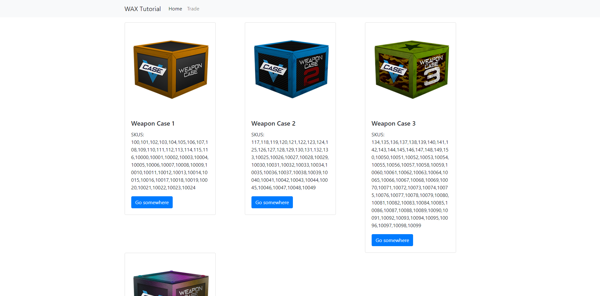

Frontend (Website)¶
Hint
The video for this parts can be found here
Caution
DISCLAIMER This section is just a basic tutorial on how to get started with implementing the API on a website. If you know how to do it on your own just skip this!
Hint
All the code written below is also available on GitHub.
Angular¶
Angular definitely more complex than other frontend frameworks, this is why I want to give you a quick overview.
Requirements¶
- We will need Node.js.
- Installation guide for Windows
- Installation guide for Linux (all versions)
- A more advanced text editor than Notepad in Windows to write our code. Recommended free text editors:
- Atom
- Visual Studio Code (only for Windows)
- Sublime Text
- (Optional and only for Windows users) A different console
- I personally do not like the command prompt in Windows
- My favorite console so far is the GIT Console (You will see why later on)
- The Angular CLI
- You can simply download Angular CLI by typing
npm install -g @angular/cliinto your console - We need that to create and build our Angular application
- You can simply download Angular CLI by typing
Once you installed Node.js and chose your text editor we can start coding. I will use the following setup for this tutorial
- Node version 8.11.4 (you can check it by simply opening a console and by typing in
node --version) - Atom (1.30.0) as my text editor with the File Icons Package (just for cosmetic)
- Because I am on Windows 10, I am going to use the GIT console
Step 1¶
Creating an setting up our application.
- To create a new application type
ng new PROJECT-NAMEin a newly opened console (watch out for the path in the console) - You can choose any project name you like, as long as it matches the criteria
- To create a new application type
cdinto your newly created project folder withcd PROJECT-NAME- Start your Angular application with
ng serve - Open up your browser and type in
127.0.0.1:4200orlocalhost:4200 - You will be greeted with the default starter template
Caution
Make sure your API server is still up and running
Step 2¶
- Cancel the
ng servewith CTRL+C - Change directory by typing
cd src/app/ - Create a new folder named components
mkdir components - Change directory once again into the newly created directory
cd components/ - Create your components with
ng g component COMPONENT-NAME - For this tutorial we will create a component named navbar and main
- Create your components with
Now repeat these steps with services
- We have to change directory to
src/app/again because now we are insrc/app/componets. Simply typecd .. - Create a new folder named services
mkdir servicesandcdinto it - Create your services by typing
ng g service SERVICE-NAME - For this tutorial we will create a service named
api
- For this tutorial we will create a service named
- Create your services by typing
src/app/ directory but it will become very messy.)ng serveStep 3¶
Open up your text editor and add your Angular application folder as a project folder.
- Search for the file
app.module.tsinsrc/app/. - Your components should already be added to this file (If not, just look at the code given below). Your code should look something like this
import { BrowserModule } from '@angular/platform-browser';
import { NgModule } from '@angular/core';
import { AppComponent } from './app.component';
import { NavbarComponent } from './components/navbar/navbar.component';
import { MainComponent } from './components/main/main.component';
@NgModule({
declarations: [
AppComponent,
NavbarComponent,
MainComponent
],
imports: [
BrowserModule
],
providers: [],
bootstrap: [AppComponent]
})
export class AppModule { }
- Add your “API Service” by typing
import { ApiService } from './services/api.service';and add theApiService Classto the providers.
import { ApiService } from './services/api.service';
providers: [ApiService],
- Next we have to add the HttpClientModule to our
app.module.tsfile to make HTTP requests to the server. - Simply import it at the top by typing
import { HttpClientModule } from '@angular/common/http'; - And add the
HttpClientModuleto the imports at the bottom
- Simply import it at the top by typing
- Next we have to add the HttpClientModule to our
- (optional) The last thing we are going to add is Bootstrap to have some kind of nice design and a better UI
- Head over to https://getbootstrap.com/ and download the latest version (currently 4.1.3)
- Go for the Compiled CSS and JS Bootstrap version
- Go to https://jquery.com/download/ and download the latest version of jQuery (go for the “compresed” one)
- You are better off if you hover of the “Download the compressed, production jQuery 3.3.1” link and right-click on it to “Save link as”
- Save it to the Desktop for now
- Head to your Angular project folder and search for the
src/assets/directory via your explorer - Unzip the Bootstrap archive and copy the
cssandjsfolder into thesrc/assetsdirectory - Copy the jQuery.js file you saved on the Desktop into the
src/assets/jsfolder - Open up your text editor and search for the
angular.jsonfile in the project folder - Search for line 25, you should see an entry called
styles. Copy this path above the"src/styles.css"one"src/assets/css/bootstrap.min.css" - Underneath the
styleentry there also should bescripts- Add the two following lines -"src/assets/js/jquery-3.3.1.min.js"-"src/assets/js/bootstrap.min.js"- Don’t mess up the order of this two line and don’t forget a comma after the jquery entry
It should look like this afterwards
{
"styles": [
"src/assets/css/bootstrap.min.css",
"src/styles.css"
],
"scripts": [
"src/assets/js/jquery-3.3.1.min.js",
"src/assets/js/bootstrap.min.js"
]
}
ng serve.Step 4¶
This section is about using our two created components and how to add some content on the page.
Implementing our components¶
Change the code in the app.component.html file to this
<app-navbar></app-navbar>
<app-main></app-main>
Explanation¶
navbar and main. The name app-navbar and app-main is specified by the component.Step 5¶
Focusing on the API service¶
- Open up the api.service.ts file
- Copy in the following code, and check the “Explanation” below to understand what is going on.
import { Injectable } from '@angular/core';
import { HttpClient } from '@angular/common/http';
@Injectable({
providedIn: 'root'
})
export class ApiService {
constructor(private _http: HttpClient) { }
getCaseSchema() {
return this._http.get<CaseSchema>("http://127.0.0.1:3000/caseschema");
}
}
interface CaseSchema {
status: any,
time: any,
response: any
}
Explanation¶
- Once again we need the
HttpClientto access HTTP requests - To use it, we need to define it in the constructor as well
- We created a function that requests the “CaseSchema” from our API
- This function can now be called from everywhere
Implementing The Service¶
So the next thing is to use our service function on the main component.
- Open up the
main.component.tsfile (This file contains all the logic behind your static website) - Copy the code below and paste it into the file
- Head to the explanation section to understand the code
import { Component, OnInit } from '@angular/core';
import { ApiService } from '../../services/api.service'
@Component({
selector: 'app-main',
templateUrl: './main.component.html',
styleUrls: ['./main.component.css']
})
export class MainComponent implements OnInit {
constructor(private _api: ApiService) {
this._api.getCaseSchema()
.subscribe(data => {
console.log(data);
}, error => {
console.error(error);
});
}
ngOnInit() { }
}
Explanation¶
- So first of all we have to include our API service file into this one to use our function
- Once again we create an instance of the class as seen in the
constructor() - We call the function in the constructor so once the website is loading we are requesting the data immediately
- How does the function even work?
this._api.getCaseSchema()this is just the way to call the function.subscribe()Angular works with Observables which means you can only subscribe or unsubscribe to them (More about Observables can be found here)- Inside the
subscribe()Method we can access two variables. One that contains our data calleddatain this case (You can call it whatever you want) and another one that contains anyerrorscalled error here (Again you can call it whatever you want) - It is recommended to use a better way of handling errors than simply log them to the console.
- For now we are just printing the data to the browser developer console.
So let’s head over to the browser and open up the console (Shortcut: F12)
Error¶
No 'Access-Control-Allow-Origin' header is present on the requested resource.. This is more or less our “mistake” but actually this is a safety feature provided by your browser (I won’t go any deeper on that topic).- Create a file named
proxy.conf.jsonin the root folder of your Angular project folder - Copy and paste the following code
{
"/caseschema": {
"target": "http://localhost:3000",
"secure": false,
"logLevel": "debug"
}
}
- Edit the
angular.jsonfile. - Head to line ~54 (this may differ, but just look for the entry
"serve") - Copy
"proxyConfig": "proxy.conf.json"into the options so it looks like this
- Head to line ~54 (this may differ, but just look for the entry
- Edit the
{
"serve": {
"builder": "@angular-devkit/build-angular:dev-server",
"options": {
"browserTarget": "frontend:build",
"proxyConfig": "proxy.conf.json"
},
"configurations": {
"production": {
"browserTarget": "frontend:build:production"
}
}
}
}
- Restart the Angular serve instance by opening up the console, pressing CTRL+C and entering
ng serveonce again. - Adjust the URL in the
api.service.tsfile fromhttp://127.0.0.1:3000/caseschemato just/caseschema
Now head to your browsers (maybe you have to refresh the website) and take a look in the console. You now should see the data from the WAX ExpressTrade API.
Step 6¶
- Changes in the
main.component.tsfile - Create a variable above the
constructor()like thiscases: any = []; - Change the line
console.log(data)tothis.cases = data.response.cases;
- Create a variable above the
- Changes in the
- Changes in the
main.component.htmlfile
<div class="container">
<div class="row">
<div class="col" *ngFor="let case of cases">
<div class="card" style="width: 18rem;">
<img class="card-img-top" src="{{ case.image['300px'] }}" alt="Card image cap">
<div class="card-body">
<h5 class="card-title">{{ case.name }}</h5>
<p class="card-text">SKUS: <br> {{ case.skus}} </p>
<a href="#" class="btn btn-primary">Go somewhere</a>
</div>
</div>
</div>
</div>
</div>
Explanation¶
- Changes to the
main.component.tsfile - We created the variable so we can access it later on in the HTML file.
- The only important thing is that the variable has to be an Array, so we can loop through it later on.
- Because we do not need the data to be logged in the console we just replaced it.
- Lastly we save the
data.response.casesdata to our created variable calledcases
- Changes to the
- Changes made to the
main.component.htmlfile - The most important line probably is line three
- As you can see we use the built in template syntax
*ngFor. This is just a loop that creates as many objects as items stored in the array. In this case we have four array entries, so this loop creates four new object for us. - This is a very convenient and easy way to create this objects. Especially because we can access each variable of the array individually. This means we simply use another template syntax to access data like “image”, “name” or “skus”
- To sum things up, this probably is the easiest and most convenient way to create an object for each, in this case, case.
- Changes made to the
That’s it, you can check the result in your browser. It should look like this
Additional Examples¶
Example 1¶
This piece of code will allow a user to initiate a case opening.
api.service.ts¶openCase(trade_url, caseId, amount) {
return this._http.post<CaseSchema>('/opencase', { trade_url: trade_url, caseId: caseId, amount: amount });
}
main.component.ts¶openCase(caseId, amount) {
// Usually you want to access the trade url via the request on your server
let trade_url = "VALID TRADE URL";
if (!caseId || !amount)
return alert("CaseId or amount not valid!");
if (amount <= 0)
return alert("You need to open at least 1 case!");
this._api.openCase(trade_url, caseId, amount)
.subscribe(data => {
// this should be changed to some kind of alert as well, but I am unable to test this properly because of insufficient keys
console.log(data.response);
}, error => {
// simple browser alert with the error
alert(error.error.text);
});
}
main.component.html¶<div class="container">
<div class="row">
<div class="col" *ngFor="let case of cases">
<div class="card" style="width: 18rem;">
<img class="card-img-top" src="{{ case.image['300px'] }}" alt="Card image cap">
<div class="card-body">
<h5 class="card-title">{{ case.name }}</h5>
<p class="card-text">SKUS: <br> {{ case.skus}}</p>
<div class="input-group">
<input type="number" class="form-control" placeholder="Keys" aria-label="keys" value="1" min="1" #keys>
<div class="input-group-append">
<span class="input-group-text btn btn-primary" (click)="openCase(case.id, keys.value)">Open</span>
</div>
</div>
</div>
</div>
</div>
</div>
</div>
Hint
More examples following very soon…